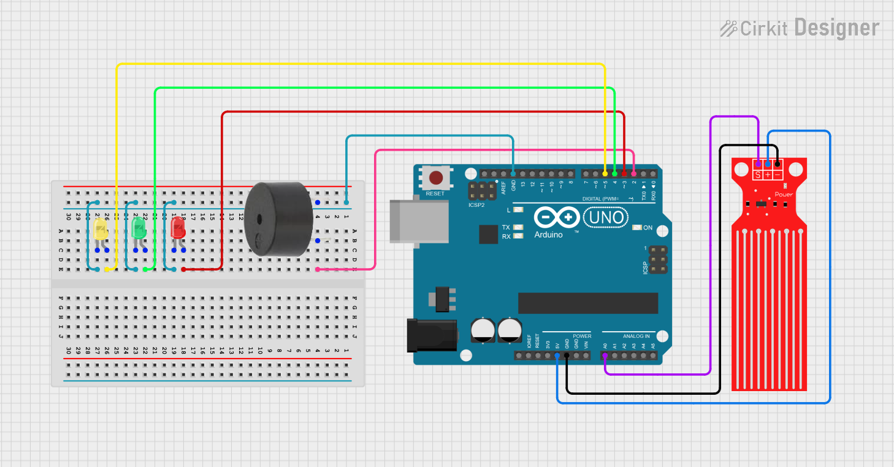

Water Level Indicator Project using Arduino
In this project, we will create a water level indicator using Arduino and a water level sensor. This project is useful for monitoring water levels in tanks, containers, and other applications. We will display the water level status using LEDs and a buzzer for alerts.
BeginnerComponents Required
- Arduino Uno (or compatible board)
- Water Level Sensor Module
- 3 × LEDs (Red, Yellow, Green)
- 3 × 220Ω Resistors (for LEDs)
- Buzzer (5V)
- Breadboard
- Jumper Wires
- USB Cable
- Container with water (for testing)
Circuit Connections
Follow the steps below to connect the water level sensor, LEDs, and buzzer with the Arduino board. Make sure the Arduino is not connected to USB while wiring.
-
Connect the water level sensor module:
- VCC to Arduino 5V
- GND to Arduino GND
- Signal to Arduino Analog Pin A0
- Connect the Green LED (Low water) to digital pin 8 with 220Ω resistor to GND.
- Connect the Yellow LED (Medium water) to digital pin 9 with 220Ω resistor to GND.
- Connect the Red LED (High water) to digital pin 10 with 220Ω resistor to GND.
- Connect the Buzzer positive to digital pin 11 and negative to GND.

Here is the circuit diagram for reference.
Arduino Code
/*
Project: Water Level Indicator using Arduino
Description: This project uses a water level sensor to detect the level of water in a container
Components:
- Water Level Sensor Module
- Arduino Uno
- 3 LEDs (Red, Yellow, Green)
- 3 × 220Ω Resistors
- Buzzer (5V)
- Breadboard and Jumper Wires
- USB Cable for programming
- Container with water for testing
Author: Circuit Creation RN
*/
//This code reads the water level from the sensor and controls the LEDs and buzzer based on the water level.
int waterSensor = A0; // Analog pin A0
int greenLED = 8; // Low water indicator
int yellowLED = 9; // Medium water indicator
int redLED = 10; // High water indicator
int buzzer = 11; // Buzzer pin
void setup() {
pinMode(greenLED, OUTPUT);
pinMode(yellowLED, OUTPUT);
pinMode(redLED, OUTPUT);
pinMode(buzzer, OUTPUT);
Serial.begin(9600);
}
void loop() {
int waterLevel = analogRead(waterSensor);
Serial.print("Water Level: ");
Serial.println(waterLevel);
// Turn off all LEDs and buzzer first
digitalWrite(greenLED, LOW);
digitalWrite(yellowLED, LOW);
digitalWrite(redLED, LOW);
digitalWrite(buzzer, LOW);
// Check water level and turn on appropriate LED
if (waterLevel < 300) {
// Low water level
digitalWrite(greenLED, HIGH);
}
else if (waterLevel >= 300 && waterLevel < 600) {
// Medium water level
digitalWrite(yellowLED, HIGH);
}
else {
// High water level - trigger alert
digitalWrite(redLED, HIGH);
digitalWrite(buzzer, HIGH);
}
delay(500);
}
Upload the Code
- Connect the Arduino board to your computer using the USB cable.
- Open the Arduino IDE and paste the code into a new sketch.
- Select the correct board and port from the Tools menu.
- Click the Upload button.
- Once uploaded, open the Serial Monitor (Ctrl+Shift+M) to view water level values.
- Test by dipping the sensor into water to see the LEDs and buzzer respond.
Code Explanation
Let us understand how the Arduino code works step by step. This will help you modify the project for your specific needs.
Declaring the Pins
int waterSensor = A0; stores the analog pin where the sensor is connected.
The LEDs are connected to digital pins 8, 9, and 10.
The buzzer is connected to digital pin 11.
setup() Function
The setup() function initializes all the digital pins as outputs.
We also start serial communication at 9600 baud rate to monitor water level values
on the Serial Monitor for debugging and calibration.
loop() Function
The loop() function runs continuously.
It reads the analog value from the water sensor using analogRead().
The sensor returns values between 0-1023, where higher values indicate more water.
Water Level Logic
We have three water level ranges:
- Low Level (< 300): Green LED turns ON - water is low
- Medium Level (300-600): Yellow LED turns ON - water is at normal level
- High Level (> 600): Red LED and buzzer turn ON - water overflow warning
Sensor Calibration
To calibrate the sensor for your specific container:
- Empty water - note the analog value
- Fill with water - note the analog value
- Adjust the threshold values (300, 600) in the code accordingly
How It Works
The water level sensor detects the presence of water through capacitive sensing or conductivity. When the sensor is dry (no water), it sends a low analog value to the Arduino. As water level increases, the analog value increases.
The Arduino continuously reads this analog value and determines the water level status. Based on predefined thresholds, different LEDs are illuminated to indicate the water level.
When the water level becomes too high, the buzzer sounds an alert to warn you of potential overflow. This automatic detection and alert system is crucial for preventing water wastage and damage.
Common Mistakes & Troubleshooting
- Sensor not detecting water: Make sure the sensor pins are fully submerged in water during testing. Check all connections are secure.
- LEDs not lighting up: Check the LED orientation - longer leg should be connected to Arduino pin. Verify the 220Ω resistors are in place.
- Buzzer not sounding: Make sure positive terminal of buzzer is connected to the Arduino pin. Check if buzzer is functioning by testing with a battery.
- Incorrect water level readings: The sensor needs calibration. Check Serial Monitor values when dry and wet. Adjust threshold values in the code based on actual readings.
- Upload error: Select the correct board (Arduino Uno) and COM port from Tools menu.
- Erratic readings: Make sure sensor is not touching metal parts of container. Use proper jumper wires and avoid loose connections.